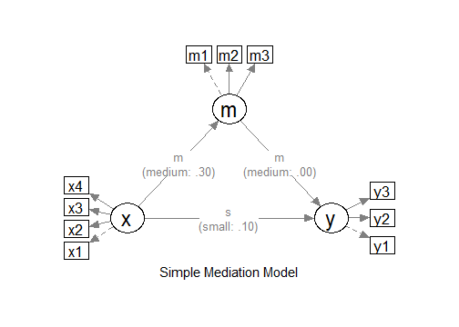

Sample Size Determination with Ordinal Variables: Latent Variable Models
2026-03-17
Source:vignettes/articles/n_from_power_mediation_ordinal_lav_simple.Rmd
n_from_power_mediation_ordinal_lav_simple.RmdIntroduction
This article illustrates how to do power analysis and sample size
determination in some typical latent variable models, with the variables
being ordinal (e.g., true-false binary items, or 5-point Likert scale
items) and the model to be estimated using methods such as MLR or DWLS
in lavaan. The package power4mome will be
used for illustration.
Prerequisite
Basic knowledge about fitting models by lavaan and
power4mome is required.
This file is not intended to be an introduction on how to use
functions in power4mome. For details on how to use
power4test(), refer to the Get-Started
article. Please also refer to the help page of
n_region_from_power(), and the article
on n_from_power(), which is called twice by
n_region_from_power() to find the regions described
below.
Scope
A simple mediation model of latent variables will be used as an example. Users new to the package are recommended to read the article on the steps for a model with variables having a multivariate normal distribution (the default).
Set Up the Model and Test
Load the packages first:
Estimate the power for a sample size.
The code for the model:
model <-
"
m ~ x
y ~ m + x
"
model_es <-
"
m ~ x: m
y ~ m: m
y ~ x: s
"
The Model
Refer to this article on how to
set number_of_indicators and reliability when
calling power4test().
Convert the Continuous Variables to Ordinal Variables
Suppose that we know in advance the indicators collect data in
ordinal format, such as binary items (true-false) or 5-point items,
although the underlying distributions are assumed to be multivariate
normal, as is usually the case for this kind of data. In
lavaan, it is common to set ordered = TRUE and
fit the model using DWLS (or WLSMV in Mplus literature), or using MLR
for items with five or more categories, such as Likert scale items. We
would like to have an accurate assessment of the power and sample size
requirements by taking these into account.
Data Processor
The package power4mome comes with some data processors, functions for processing the generated dataset before fitting a model to it. A full list of them can be found here.
For example, the function ordinal_variables() can be
used to convert a generated variable, drawn from a multivariate normal
distribution by default, to a variable with two or more categories,
using some thresholds (k - 1 thresholds for k
categories). The processed dataset will be used instead of the original
dataset for subsequent analyses, such as model fitting and power
analysis.
An Example
Suppose we know in advance that the indicators of x and
y are binary indicators, and the indicators of
m are 5-point Likert scale indicators. We have no special
reason to assume that distribution is skewed, and so a symmetric
conversion will be conducted. Although users can specify the thresholds
they would like to use, a collection of built-in patterns based on Savalei & Rhemtulla (2013) can be selected
using a keyword, as shown below. Please refer to the help page of
ordinal_variables() for the list of supported patterns.
Set the Conversion Using process_data
This section illustrates how to set up the call to
power4test() using process_data and
ordinal_variables(). We would like to check the model
first. Therefore, the test of indirect effect is not added for now.
out <- power4test(
nrep = 600,
model = model,
pop_es = model_es,
n = 200,
number_of_indicators = c(x = 4,
m = 3,
y = 3),
reliability = c(x = .80,
m = .70,
y = .80),
process_data = list(
fun = ordinal_variables,
args = list(cut_patterns = c(x = "s2",
y = "s2",
m = "s5"))
),
iseed = 1234,
parallel = TRUE)Note that reliability refer to the population
reliability coefficients of the scale of a factor before the
variables are converted to ordinal variables.
How to Use process_data and
ordinal_variables()
The argument process_data is used to specify the
function, as well as any arguments need, to process the
generated data.
The value must be a named list. The argument fun is a
required argument, which is the argument to be used to process the data
(ordinal_variables in the example above).
If additional arguments are to be passed to this function, set them
to a named list for args, as shown above.
In the example above, the argument cut_patterns is set,
telling ordinal_variables() how the variables are to be
converted. The value of cut_patterns can be named vector,
with the names being the names of the latent factors, and the
value the names of the built-in patterns to be used.
In the example above, "s2" is a symmetric conversion,
cutting the continuous variables into two values with a threshold of 0.
"s5" is a symmetric conversion, cutting the continuous
variables into five values with the thresholds -1.5, -0.5, 0.5, and 1.5.
These thresholds are those used in the simulation study by Savalei & Rhemtulla (2013) on ordinal
variables in structural equation modeling.
If a latent factor is not included in cut_patterns, then
its indicator scores will not be converted.
Check The Generated Data
To print the details of the generated data, including the descriptive
statistics, use print with
data_long = TRUE:
print(out,
data_long = TRUE)This is part of the output:
#> ==== Descriptive Statistics ====
#>
#> vars n mean sd skew kurtosis se
#> x1 1 120000 1.5 0.50 0.00 -2.00 0
#> x2 2 120000 1.5 0.50 -0.01 -2.00 0
#> x3 3 120000 1.5 0.50 0.00 -2.00 0
#> x4 4 120000 1.5 0.50 0.00 -2.00 0
#> m1 5 120000 3.0 1.01 0.00 -0.47 0
#> m2 6 120000 3.0 1.01 0.00 -0.47 0
#> m3 7 120000 3.0 1.01 -0.01 -0.47 0
#> y1 8 120000 1.5 0.50 -0.01 -2.00 0
#> y2 9 120000 1.5 0.50 0.00 -2.00 0
#> y3 10 120000 1.5 0.50 0.00 -2.00 0By default, values of 1, 2, … will be used for the categories. The values assigned does not matter when ordinal variable methods are used. For the estimation of power, the values also do not matter if the power of a method is invariant to linear transformation of the variables, which is usually the case for most common tests.
If there are variables with 10 or few unique values, the response proportions are also printed:
#> ===== Response Proportions =====
#>
#> group: Single Group
#> 1 2 miss
#> x1 0.5 0.5 0
#> x2 0.5 0.5 0
#> x3 0.5 0.5 0
#> x4 0.5 0.5 0
#> y1 0.5 0.5 0
#> y2 0.5 0.5 0
#> y3 0.5 0.5 0
#>
#> group: Single Group
#> 1 2 3 4 5 miss
#> m1 0.067 0.24 0.38 0.24 0.068 0
#> m2 0.067 0.24 0.38 0.24 0.066 0
#> m3 0.068 0.24 0.38 0.24 0.067 0If necessary, the data generated can be retrieved by
pool_sim_data() and inspected directly:
dat <- pool_sim_data(out)
head(dat, 10)
#> x1 x2 x3 x4 m1 m2 m3 y1 y2 y3
#> 1 1 1 1 1 3 2 3 2 1 1
#> 2 1 1 2 1 2 1 2 1 1 1
#> 3 2 1 1 1 3 2 5 1 2 1
#> 4 2 2 2 2 5 3 4 2 1 1
#> 5 2 2 1 2 4 3 3 2 1 2
#> 6 1 1 1 1 1 2 3 1 1 1
#> 7 2 2 2 2 2 4 5 2 2 2
#> 8 2 2 1 1 3 3 3 1 2 1
#> 9 2 2 1 1 2 3 4 2 2 2
#> 10 2 2 2 2 4 2 4 2 2 2Fit the Model by DWLS Using ordered = TRUE
Because of the ordinal nature, we would like to estimate the power
when a proper estimation method is used. One common method used in
lavaan is DWLS, which can be enabled by adding
ordered = TRUE.
The argument fit_model_args can be use to pass
arguments, as a named list, to the fit function, which is
lavaan::sem() by default.
To use DWLS in lavaan::sem(), we use
ordered = TRUE. Therefore, we add the argument
fit_model_args = list(ordered = TRUE) in the call to
power4test():
out <- power4test(
nrep = 600,
model = model,
pop_es = model_es,
n = 200,
number_of_indicators = c(x = 4,
m = 3,
y = 3),
reliability = c(x = .80,
m = .70,
y = .80),
process_data = list(
fun = ordinal_variables,
args = list(cut_patterns = c(x = "s2",
y = "s2",
m = "s5"))
),
fit_model_args = list(ordered = TRUE),
iseed = 1234,
parallel = TRUE)We can verify that DWLS is used by printing the results:
print(out)This is part of the output:
#> ============ <fit> ============
#>
#> lavaan 0.6-21 ended normally after 28 iterations
#>
#> Estimator DWLS
#> Optimization method NLMINB
#> Number of model parameters 32
#>
#> Number of observations 200
#>
#> Model Test User Model:
#> Standard Scaled
#> Test Statistic 11.228 19.630
#> Degrees of freedom 32 32
#> P-value (Unknown) NA 0.957
#> Scaling correction factor 0.776
#> Shift parameter 5.154
#> simple second-order correctionAs shown in the printout, DWLS was used as the estimator in the
printout of lavaan.
Add the Test and Estimate Power
We now can add the test and estimate power. See this article
for details on the test function test_indirect_effect() and
how to set the argument test_fun and
test_args. R_for_bz(200) is used to set
R to the largest value less than 200 that is supported by
the method proposed by Boos & Zhang
(2000). 1
out <- power4test(
nrep = 600,
model = model,
pop_es = model_es,
n = 200,
number_of_indicators = c(x = 4,
m = 3,
y = 3),
reliability = c(x = .80,
m = .70,
y = .80),
process_data = list(
fun = ordinal_variables,
args = list(cut_patterns = c(x = "s2",
y = "s2",
m = "s5"))
),
fit_model_args = list(ordered = TRUE),
R = R_for_bz(200),
ci_type = "mc",
test_fun = test_indirect_effect,
test_args = list(x = "x",
m = "m",
y = "y",
mc_ci = TRUE),
iseed = 1234,
parallel = TRUE)The rejection rate (power) for this example can be found by
rejection_rates():
rejection_rates(out)
#> [test]: test_indirect: x->m->y
#> [test_label]: Test
#> est p.v reject r.cilo r.cihi
#> 1 0.105 0.988 0.543 0.503 0.583
#> Notes:
#> - p.v: The proportion of valid replications.
#> - est: The mean of the estimates in a test across replications.
#> - reject: The proportion of 'significant' replications, that is, the
#> rejection rate. If the null hypothesis is true, this is the Type I
#> error rate. If the null hypothesis is false, this is the power.
#> - Some or all values in 'reject' are estimated using the extrapolation
#> method by Boos and Zhang (2000).
#> - r.cilo,r.cihi: The confidence interval of the rejection rate, based
#> on Wilson's (1927) method.
#> - Wilson's (1927) method is used to approximate the confidence
#> intervals of the rejection rates estimated by the method of Boos and
#> Zhang (2000).
#> - Refer to the tests for the meanings of other columns.Using process_data in Other Functions
Other functions that make use of power4test() can also
use the arguments process_data and
fit_model_args.
For example, the output above, with ordinal indicators, can be used
directly by n_from_power() to find a sample size given a
target power:
n_power <- n_from_power(
out,
target_power = .80,
x_interval = c(200, 2000),
final_nrep = 2000,
seed = 1357
)The output with ordinal indicators can also be used directly by
n_power_region() to find a region of sample sizes given a
target power:
n_power_region <- n_region_from_power(
out,
seed = 1357
)The quick functions, described in these articles, also
support the process_data and fit_model_args
arguments. They are set in the same way as in
power4test()
This is an example for estimating the power for a specific sample size:
q_power <- q_power_mediation_simple(
a = "m",
b = "m",
cp = "s",
number_of_indicators = c(x = 4,
m = 3,
y = 3),
reliability = c(x = .80,
m = .70,
y = .80),
process_data = list(
fun = ordinal_variables,
args = list(cut_patterns = c(x = "s2",
y = "s2",
m = "s5"))
),
fit_model_args = list(ordered = TRUE),
target_power = .80,
nrep = 600,
n = 200,
R = R_for_bz(200),
seed = 1234
)This is an example of finding a sample size given a target power
(mode "n"):
q_power_n <- q_power_mediation_simple(
a = "m",
b = "m",
cp = "s",
number_of_indicators = c(x = 4,
m = 3,
y = 3),
reliability = c(x = .80,
m = .70,
y = .80),
process_data = list(
fun = ordinal_variables,
args = list(cut_patterns = c(x = "s2",
y = "s2",
m = "s5"))
),
fit_model_args = list(ordered = TRUE),
target_power = .80,
R = R_for_bz(200),
x_interval = c(200, 2000),
final_nrep = 2000,
seed = 1234,
mode = "n"
)